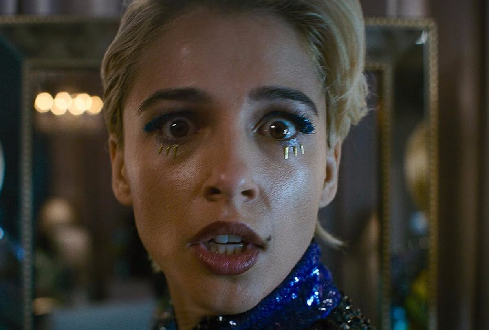
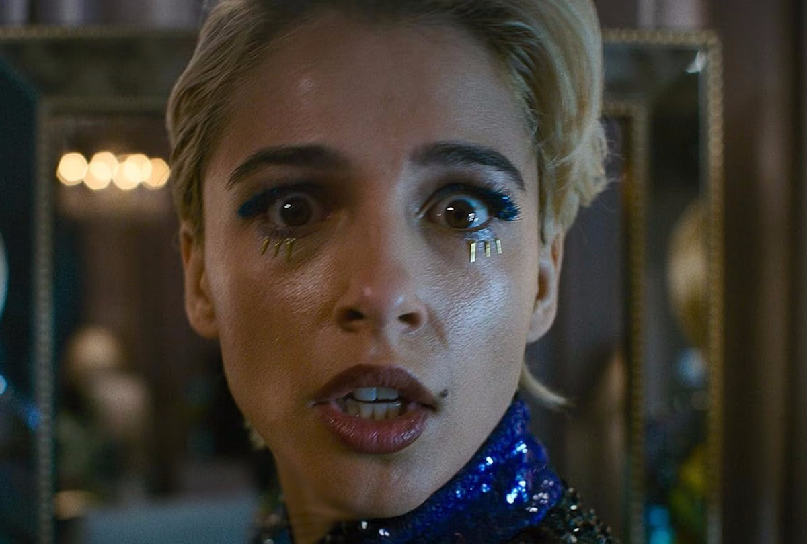
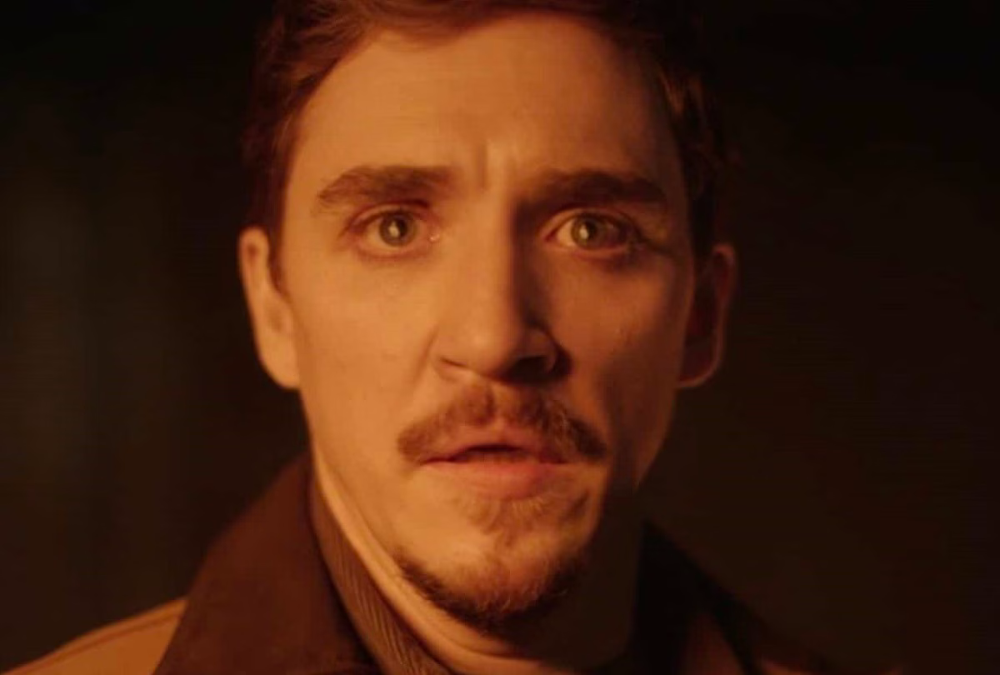
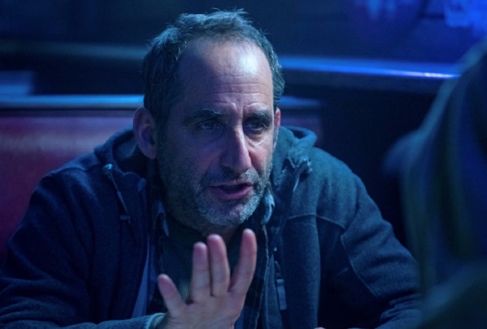

Naomi Scott, como Skye Riley
Protagonista que tiene la maldicion y trata de pararla, su interpretacion transmite una tension constante.
Protagonista que tiene la maldicion y trata de pararla, su interpretacion transmite una tension constante.
Policia y ultima victima de la primera pelicula, aparece en los primeros segundos de la segunda pelicula, su interpretacion transmite intensidad.
Trata de ayudar a Skye para terminar con la entidad (la maldicion), su interpretacion transmite esperanza y miedo.
